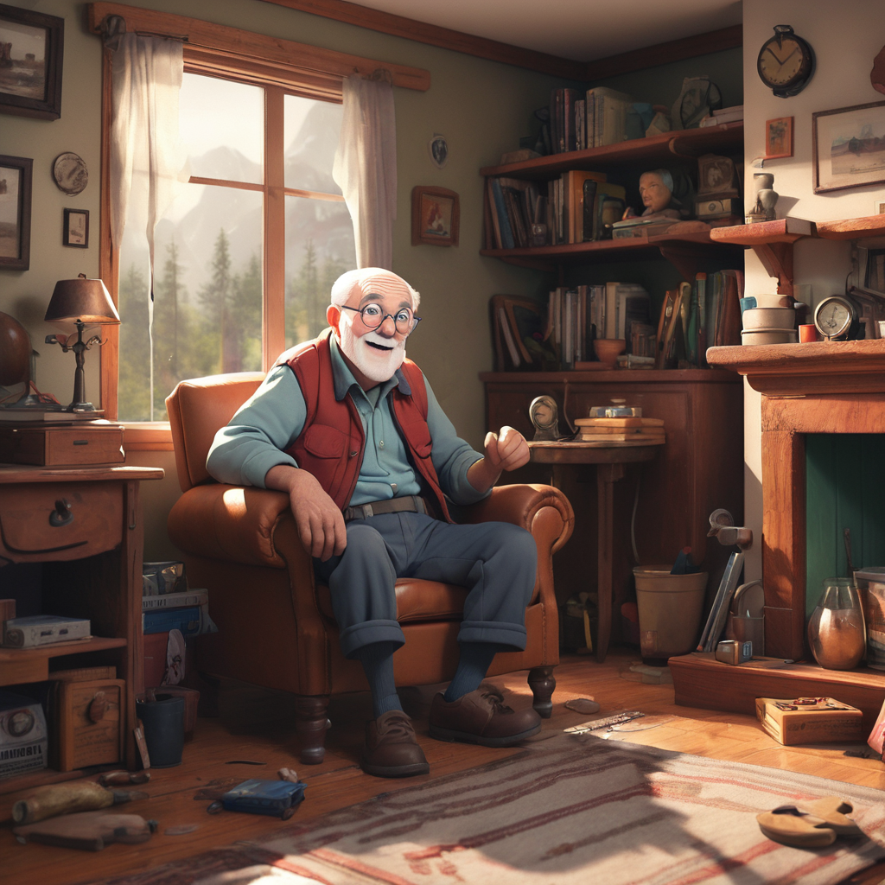

The Ancient Cave: Characters

Annie - A young girl full of intelligence and kindness who is determined to discover the truth behind her grandfather's mysterious disappearance and continue her family legend of protecting the ancient artifact and the spirits in the cave.

Sarah - a middle-aged woman with a deep passion for the occult and supernatural. Her long, wavy hair frames kind eyes that radiate wisdom and compassion. She is known in the small town for her expertise in deciphering ancient texts and unraveling mysteries that others dare not touch.
Nikola - Annie's brother, with a strong spirit and determination, ready to support his sister in all challenges and continue the family tradition of protecting the sacred place.
